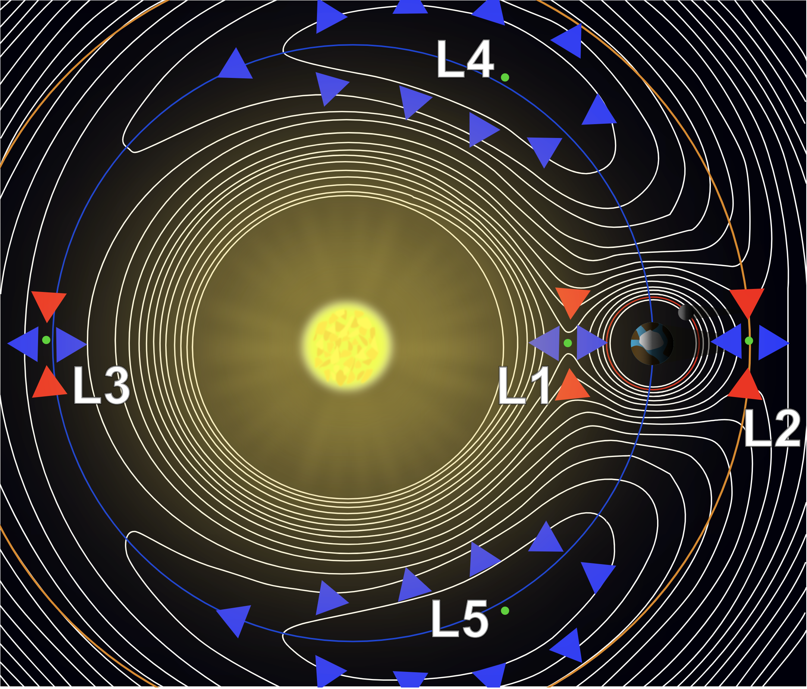
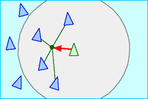
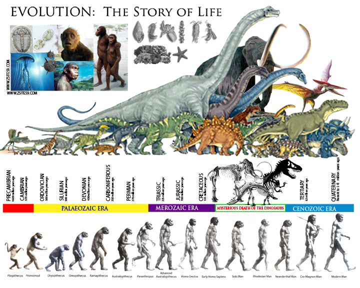
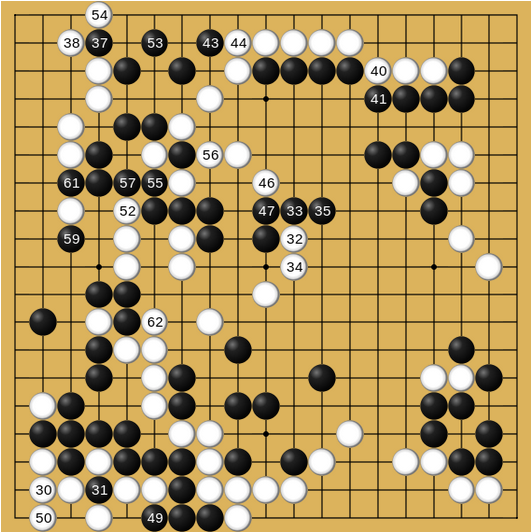
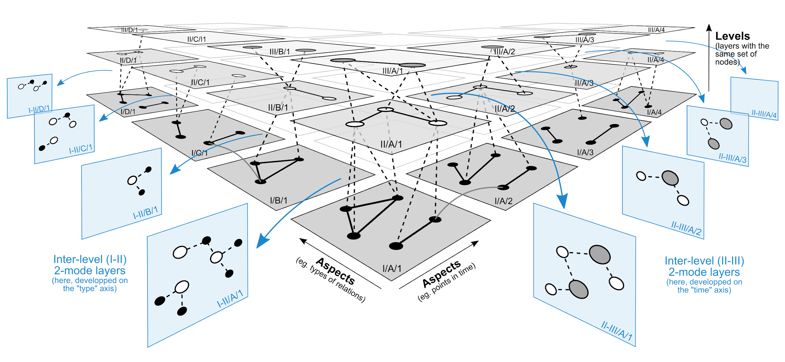

Emergence in Complex Systems
Or, Rare Stability in the Chaos
Rare Stability in the Chaos
Only five positions in the Sun–Earth system allow a stable equilibrium relative to both bodies: the Lagrange points.
This is a rare stable solution to the restricted three-body problem.
Is the generalized three-body problem solvable analytically? No, and that gap is the subject of this lecture.

The five Lagrange points of a two-body system (e.g., Sun–Earth).
Newton and Complex Systems
Sir Isaac Newton (1642–1727).
Newton’s laws describe planetary motion and fluid dynamics, and, through sensitivity to initial conditions, the seeds of chaos theory.
The three-body problem is a direct consequence of Newtonian mechanics applied to more than two interacting bodies.
Newton’s laws are exact. Their consequences, for three or more interacting bodies, are not analytically solvable.
Laplace’s Demon
“We may regard the present state of the universe as the effect of its past and the cause of its future. An intellect which… knew all forces… and all positions of all items… would embrace in a single formula the movements of the greatest bodies of the universe and those of the tiniest atom… for such an intellect nothing would be uncertain and the future, just like the past, would be present before its eyes.”
— Pierre-Simon Laplace, A Philosophical Essay on Probabilities

Pierre-Simon Laplace (1749–1827).
Analytic vs. Algorithmic
Definition
Physics is generally analytic; complex systems are generally algorithmic. Both can produce quantitative predictions that are experimentally testable.
- Complex systems exhibit a rich phase structure and huge variety of macrostates that often cannot be inferred from the elements’ properties alone: this is emergence
- The theory of complex systems is the quantitative, predictive, and experimentally testable science of generalized matter interacting through generalized interactions
Reference
Thurner, Hanel, & Klimek (2018), Introduction to the Theory of Complex Systems.
Algorithmic Thinking
- Cellular automata: Conway’s Game of Life. Simple grid rules produce unpredictable, complex patterns
- Agent-based modeling: simple agent rules lead to emergent traffic, market, or ecosystem dynamics
- Genetic algorithms: evolution-inspired search over vast, hard-to-navigate solution spaces
- Network algorithms: e.g. PageRank, navigating and ranking complex networks
- Self-organizing systems: local rules produce global order with no external guidance (animal coat patterns, galaxy structure)
- Chaos & fractals: small changes in initial conditions produce vastly different, self-similar outcomes
Machine Learning and Emergence
Predictive algorithms: deep learning models complex systems by learning patterns directly from data (climate, markets, language).
Emergence in simulation: each bird follows three local, distance-based rules. No bird perceives “the flock.”

Separation: avoid crowding nearby neighbors.

Alignment: match nearby neighbors’ heading.

Cohesion: steer toward neighbors’ center.
Run all three on every bird at once, and flock-level movement emerges, unwritten in any single bird’s rules.
The Real Thing

A murmuration of starlings. No bird is in charge. Credit: Walter Baxter, CC BY-SA 2.0.
Biology: Never at Equilibrium
Living matter constantly uses energy and performs work, driven by energy gradients, always out-of-equilibrium.
Evolution increases and destroys diversity: both a creative and a destructive process.
The Darwinian scenario alone fails to explain boom-and-bust phases, where diversity changes radically over short periods.

The fossil record: a story of both radiation and mass extinction.
Evolutionary Dynamics vs. Physics
Evolutionary dynamics differs from physics in two fundamental ways:
- Boundary conditions can’t be fixed. A wolf pack’s fate depends on climate, disease, and human activity, none of which are stable “boundary conditions” you can hold constant.
- The phase space itself isn’t fixed. New elements (traits, species, technologies) emerge and change the space of future possibilities for everyone else in the system.
The Adjacent Possible
The set of all states the world could reach in the next step, given its present state.
Introduces path-dependence into the stochastic dynamics of phase space: what’s reachable next depends entirely on where you are now.

A game of Go mid-play: the legal next moves, the “adjacent possible,” depend entirely on the current board.
Example: Building a House
A single-level base’s adjacent possible: add a second level, add windows, add a roof. Once you have two levels and windows, the adjacent possible shifts to include a chimney, a balcony, a garage.
Robust and Adaptive: Edge of Chaos
Definitions
Robustness = trajectories in a λ < 0 regime, where disturbances decay and function is preserved: a genuine stability margin.
Adaptability = a large-enough disturbance triggers a bounded, transient excursion toward λ ≥ 0, sampling nearby configurations before the system re-settles into a stable regime.
Thurner et al.’s resolution: a system that operates near this boundary gets both, from two different phases of its own trajectory.
The Mechanism
Every dynamical system has a Lyapunov exponent λ, measuring how fast nearby trajectories diverge. Time spent with λ < 0 gives robustness: perturbations shrink back out. A disturbance strong enough to push the system toward λ ≥ 0 gives adaptability: a bounded excursion through nearby configurations, followed by re-settling — cheap to trigger, but recoverable, much like a trust-region exploration step in reinforcement learning.
Case Study: Vehicle CO₂ Emissions
A single anthropogenic input, vehicle CO₂, propagates through a coupled human–natural system at three levels:
- Component (plant physiology): altered photosynthesis, stomatal regulation, short-term adaptive plasticity
- Ecosystem (forest): diversity provides redundancy; species respond unevenly; succession shifts over time
- Earth system (climate–carbon coupling): feedback loops (temperature ↔︎ CO₂ ↔︎ vegetation ↔︎ albedo), nonlinear interactions, possible tipping points
Local adaptation may coexist with global instability. Robustness at one scale does not guarantee stability at another.
Self-Organized Criticality
Dynamical, out-of-equilibrium systems that evolve toward a critical point as an attractor, with no external tuning required.
Characterized by (approximate) scale invariance: no characteristic scale, often showing up as power laws in the associated probability distributions.
A self-organized-critical sandpile model, perturbed at the center: the resulting avalanche cascades outward. Credit: rmd011.
The system is simultaneously robust and adaptive: it returns to its critical angle of repose after every avalanche, by reorganizing.
Slow Driving, Sudden Release
Sand-pile: grains added slowly and continuously; each grain adds stress to the system.
Amazon delivery network: customer orders arrive continuously (the slow driving signal); each order adds workload or stress to the network.
Both systems are continuously driven by external input they do not themselves control, and both can respond with avalanches of any size.
Three Properties, One System
- Emergence of criticality: a characteristic slope forms naturally as grains accumulate. The system progresses toward avalanches without being told to
- Structural robustness: the pile maintains integrity despite local disturbances, reorganizing to preserve overall slope and shape
- Adaptive reshaping: the pile continuously reshapes as new grains arrive. Stable global behavior emerges from constant local change
Social Systems as Networks
Social systems can be modeled as time-varying, multilayer (multiplex) networks:
- Nodes: individuals or institutions
- Links: interactions of different types
- Interactions change over time

A multilayer network: the same nodes, connected differently across layers (relation types) and time.
Emergence, Revisited
Definition
Emergence: the whole exhibits behaviors and properties not predictable from the sum of its parts.
- Traditional analytical methods (physics, biology, social science alone) are insufficient to predict emergent behavior
- Emergent patterns can be expected through an algorithmic approach
- Complex systems science is a developing field, working to make emergence quantifiable, predictable, and experimentally testable
Examples across domains: Conway’s Game of Life, flocking birds, ant colony optimization, ecosystems, financial market bubbles and crashes, human cognition, social-network misinformation spread, urban development
In-Class Activity: The ED as a Complex System
A hospital emergency department, working in groups, as a case study:
- Physics → nonlinear utilization, the capacity cliff, synchronization and blocking
- Biology → homeostasis, acute stress response, allostatic load
- Social science → local rationality vs. global externalities, correlated decisions, phase transitions
- This lecture → reinforcing/balancing feedback loops, self-organized criticality (boarding cascades), edge of chaos (robust and adaptive), networks (whole-hospital coupling)
Five discussion questions, one per lens plus resilience. Work the case, then we regroup and connect each finding back to a concept from today.
References
Reference
Thurner, S., Klimek, P., & Hanel, R. (2018). Introduction to the Theory of Complex Systems. Oxford University Press.

← Course Home · Systems Architecture · Complex Systems · Part 2
Social Science: Qualitative
The science of social interactions and their implications for society. Usually neither quantitative nor predictive in the way physics is; largely qualitative and descriptive.
Social processes are hard to model mathematically: they’re evolutionary, path-dependent, out-of-equilibrium, context-dependent, high-dimensional, and multi-level.
Early social science built its methods around exactly these difficulties.